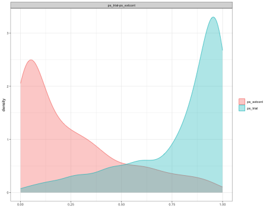
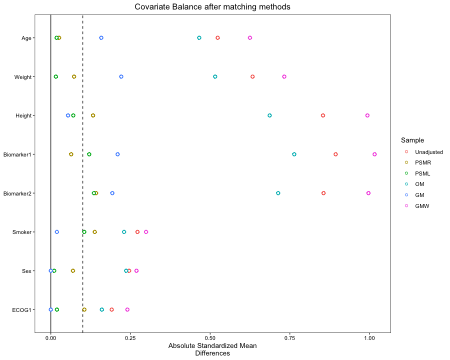
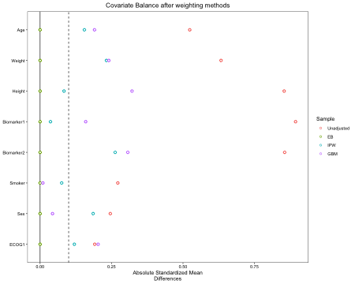
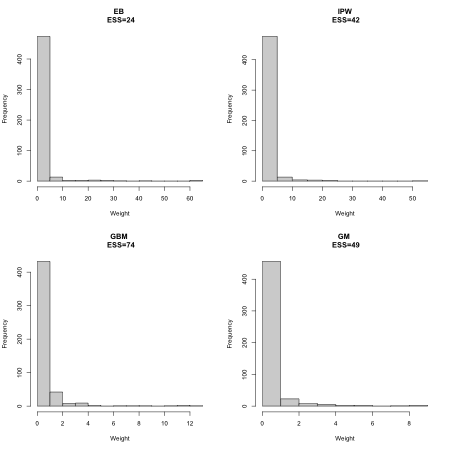

1. Matching and Weighting Methods
Manoj Khanal khanal_manoj@lilly.com
Eli Lilly & Company
2025-05-07
Source:vignettes/match_weight_01_methods.Rmd
match_weight_01_methods.RmdUsing external control in the analysis of clinical trial data can be challenging as the two data source may be heterogenous. In this document, we demonstrate the use of various matching and weighting techniques using readily available packages in R to adjust for imbalance in baseline covariates between the data sets.
We first load all of the libraries used in this tutorial.
#Loading the libraries
library(SimMultiCorrData)
library(ebal)
library(ggplot2)
library(tableone)
library(MatchIt)
library(twang)
library(cobalt)
library(dplyr)
library(overlapping)
library(survey)To demonstrate the utility of the tools, we simulate data for a randomized controlled trial (RCT) and a dataset with external controls. We simulate a two arm trial where approximately of subjects receive the active treatment. The sample size for the RCT and external data is and respectively. In the RCT, we generate continuous and binary baseline covariates as follows:
- The continuous variables are
- Age (years): mean = and variance =
- Weight (lbs): mean = and variance =
- Height (inches): mean = and variance =
- Biomarker1: mean = and variance =
- Biomarker2: mean = and variance =
- The categorical variables are
- Smoker: Yes = 1 and No = 0. Proportion of Yes is .
- Sex: Male = 1 and Female = 0. Proportion of Male is .
- ECOG1: ECOG 1 = 1 and ECOG 0 = 0. Proportion of ECOG 1 is .
We simulate covariates with a correlation coefficient of between all variables. For the continuous variables, we also specify the skewness and kurtosis to be and , respectively, for all variables. Given the randomized nature of the RCT, subjects are assigned treatment at random.
Other variables in the simulated data include
- The treatment indicator is
- group: group = 1 is treatment and group = 0 is placebo.
- The time to event variable is
- time
- The event indicator variable is
- event: event = 1 is an event indicator and event = 0 is censored
- The data indicator variable is
- data: data = TRIAL indicating the trial data set
To generate the covariates, we first specify the sample sizes, number of continuous and categorical variables, the marginal moments of the covariates, and the correlation matrix. Note that rcorrvar2 requires the correlation matrix to be ordered as ordinal, continuous, Poisson, and Negative Binomial.
#Simulate correlated covariates
n_t <- 600 #Sample size in trial data
n_ec <- 500 #Sample size in external control data
k_cont <- 5 #Number of continuous variables
k_cat <- 3 #Number of categorical variables
means_cont_tc <- c(55,150,65,35,50) #Vector of means of continuous variables
vars_cont_tc <- c(15,10,6,5,6)
marginal_tc = list(0.2,0.8,0.3)
rho_tc <- matrix(0.2, 8, 8)
diag(rho_tc) <- 1
skews_tc <- rep(0.2,5)
skurts_tc <- rep(0.1,5)Simulating trial data
After specifying the moments of the covariate distribution, we
simulate the covariates using rcorrvar2 function from
SimMultiCorrData package.
#Simulating covariates
trial.data <- rcorrvar2(n = n_t, k_cont = k_cont, k_cat = k_cat, k_nb = 0,
method = "Fleishman", seed=1,
means = means_cont_tc, vars = vars_cont_tc, # if continuous variables
skews = skews_tc, skurts = skurts_tc,
marginal=marginal_tc, rho = rho_tc)
#>
#> Constants: Distribution 1
#>
#> Constants: Distribution 2
#>
#> Constants: Distribution 3
#>
#> Constants: Distribution 4
#>
#> Constants: Distribution 5
#>
#> Constants calculation time: 0.003 minutes
#> Intercorrelation calculation time: 0.001 minutes
#> Error loop calculation time: 0 minutes
#> Total Simulation time: 0.003 minutes
trial.data <- data.frame(cbind(id=paste("TRIAL",1:n_t,sep=""), trial.data$continuous_variables,
ifelse(trial.data$ordinal_variables==1,1,0)))
colnames(trial.data) <- c("ID", "Age", "Weight","Height","Biomarker1","Biomarker2","Smoker",
"Sex", "ECOG1")We now simulate the survival outcome data using the Cox proportional hazards model (Cox 1972) in which the hazard function is given by
where is the baseline hazard function and assumed to be constant, is a matrix of baseline covariates, is a vector of covariate effects, is the treatment indicator, and is the treatment effect in terms of the log hazard ratio.
The survival function is given by
where
.
The time to event is generated using a inverse CDF method. The censoring
time is generated independently from an exponential distribution with
rate=1/4.
#Simulate survival outcome using Cox proportional hazards regression model
set.seed(1)
u <- runif(1)
lambda0 <- 2 #constant baseline hazard
#Simulate treatment indicator in the trial data
trial.data$group <- rbinom(n_t,1,prob=0.7)
beta <- c(0.3,0.1,-0.3,-0.2,-0.12,0.3,1,-1,-0.4)
times <- -log(u)/(lambda0*exp(as.matrix(trial.data[,-1])%*%beta)) #Inverse CDF method
cens.time <- rexp(n_t,rate=1/4) #Censoring time from exponential distribution
event <- as.numeric(times <= cens.time) #Event indicator. 0 is censored.
time <- pmin(times,cens.time)
#Combine trial data
trial.data <- data.frame(trial.data,time,event,data="TRIAL")The first 10 observations in the RCT data is shown below.
| ID | Age | Weight | Height | Biomarker1 | Biomarker2 | Smoker | Sex | ECOG1 | group | time | event | data |
|---|---|---|---|---|---|---|---|---|---|---|---|---|
| TRIAL1 | 54.59830 | 145.8227 | 67.60183 | 36.69103 | 52.73474 | 0 | 1 | 0 | 1 | 0.4089043 | 0 | TRIAL |
| TRIAL2 | 50.71835 | 151.0235 | 63.55137 | 32.19172 | 45.61235 | 1 | 1 | 1 | 1 | 0.9721405 | 0 | TRIAL |
| TRIAL3 | 59.66273 | 150.3079 | 68.91083 | 40.98128 | 53.25314 | 0 | 1 | 0 | 0 | 0.2956919 | 0 | TRIAL |
| TRIAL4 | 48.05746 | 142.5048 | 65.83782 | 37.38280 | 51.73119 | 0 | 1 | 1 | 1 | 4.3111823 | 0 | TRIAL |
| TRIAL5 | 51.36553 | 150.3589 | 61.96020 | 33.71680 | 49.69150 | 0 | 1 | 0 | 0 | 0.2644848 | 0 | TRIAL |
| TRIAL6 | 55.05345 | 148.9918 | 64.62284 | 36.49923 | 45.23599 | 0 | 1 | 0 | 0 | 0.3103544 | 0 | TRIAL |
| TRIAL7 | 60.73487 | 154.1394 | 70.10825 | 37.82151 | 48.60835 | 0 | 0 | 0 | 1 | 1.7177436 | 0 | TRIAL |
| TRIAL8 | 51.16550 | 147.4829 | 64.71295 | 34.43417 | 47.80836 | 0 | 1 | 1 | 1 | 5.2652367 | 0 | TRIAL |
| TRIAL9 | 54.18983 | 148.4076 | 67.79324 | 32.34567 | 49.26449 | 1 | 1 | 1 | 1 | 3.7070752 | 1 | TRIAL |
| TRIAL10 | 55.79565 | 150.5489 | 65.86911 | 32.92278 | 46.61912 | 0 | 1 | 0 | 1 | 0.4210952 | 1 | TRIAL |
The censoring and event rate in the RCT data is
The distribution of the outcome time is
summary(trial.data$time)
#> Min. 1st Qu. Median Mean 3rd Qu. Max.
#> 0.00771 0.31937 0.91603 1.61943 2.00923 15.21981The summary of each of the baseline covariates and their standardized mean difference between treatment arms is shown below.
myVars <- c("Age", "Weight", "Height", "Biomarker1", "Biomarker2", "Smoker", "Sex",
"ECOG1")
## Vector of categorical variables
catVars <- c("Smoker", "Sex", "ECOG1", "group")
tab1 <- CreateTableOne(vars = myVars, strata = "group" , data = trial.data, factorVars = catVars)
print(tab1,smd=TRUE)
#> Stratified by group
#> 0 1 p test SMD
#> n 178 422
#> Age (mean (SD)) 54.89 (3.84) 55.05 (3.91) 0.651 0.041
#> Weight (mean (SD)) 150.29 (3.12) 149.88 (3.18) 0.151 0.129
#> Height (mean (SD)) 65.29 (2.56) 64.88 (2.40) 0.060 0.166
#> Biomarker1 (mean (SD)) 35.28 (2.24) 34.88 (2.24) 0.048 0.177
#> Biomarker2 (mean (SD)) 50.02 (2.52) 49.99 (2.41) 0.902 0.011
#> Smoker = 1 (%) 34 (19.1) 87 (20.6) 0.756 0.038
#> Sex = 1 (%) 148 (83.1) 332 (78.7) 0.254 0.114
#> ECOG1 = 1 (%) 45 (25.3) 137 (32.5) 0.099 0.159Simulating external control data
The same set of covariates were simulated for the external control data as the RCT. The means, variances for continuous variables and proportion for categorical variables are modified for the external controls compared to the RCT according to the code below.
means_cont_ec <- c(55+2,150-2,65-2,35+2,50-2) #Vector of means of continuous variables
vars_cont_ec <- c(14,10,5,5,5)
marginal_ec = list(0.3,0.7,0.4)
ext.cont.data <- rcorrvar2(n = n_ec, k_cont = k_cont, k_cat = k_cat, k_nb = 0,
method = "Fleishman", seed=3,
means = means_cont_ec, vars = vars_cont_ec, # if continuous variables
skews = skews_tc, skurts = skurts_tc,
marginal=marginal_ec, rho = rho_tc)
#>
#> Constants: Distribution 1
#>
#> Constants: Distribution 2
#>
#> Constants: Distribution 3
#>
#> Constants: Distribution 4
#>
#> Constants: Distribution 5
#>
#> Constants calculation time: 0.001 minutes
#> Intercorrelation calculation time: 0 minutes
#> Error loop calculation time: 0 minutes
#> Total Simulation time: 0.002 minutes
ext.cont.data <- data.frame(cbind(id=paste("EC",1:n_ec,sep=""), ext.cont.data$continuous_variables,
ifelse(ext.cont.data$ordinal_variables==1,1,0)))
colnames(ext.cont.data) <- c("ID", "Age", "Weight","Height","Biomarker1","Biomarker2","Smoker", "Sex", "ECOG1")The same generating mechanism used for the RCT data was used to simulate survival time for the external controls.
#Simulate survival outcome using Cox proportional hazards regression model
set.seed(1111)
u <- runif(1)
lambda0 <- 6 #constant baseline hazard
beta <- c(-0.27,-0.1,0.3,0.2,0.1,-0.31,-1,1)
times <- -log(u)/(lambda0*exp(as.matrix(ext.cont.data[,-1])%*%beta)) #Inverse CDF method
cens.time <- rexp(n_ec,rate=3) #Censoring time from exponential distribution
event <- as.numeric(times <= cens.time) #Event indicator. 0 is censored.
time <- pmin(times,cens.time)
#Simulate treatment indicator in the trial data
group <- 0
ext.cont.data <- data.frame(ext.cont.data,group,time,event,data="EC")The first 10 observations in the external control data is shown below.
| ID | Age | Weight | Height | Biomarker1 | Biomarker2 | Smoker | Sex | ECOG1 | group | time | event | data |
|---|---|---|---|---|---|---|---|---|---|---|---|---|
| EC1 | 56.22299 | 147.2548 | 68.01663 | 37.43258 | 46.26655 | 0 | 1 | 0 | 0 | 0.0254106 | 1 | EC |
| EC2 | 51.53777 | 142.9052 | 59.87302 | 37.63385 | 45.57254 | 1 | 1 | 1 | 0 | 0.0275893 | 1 | EC |
| EC3 | 61.84501 | 146.4668 | 61.10423 | 37.99792 | 47.80536 | 0 | 0 | 0 | 0 | 0.0269829 | 0 | EC |
| EC4 | 51.65163 | 142.8451 | 63.08088 | 38.97152 | 45.82025 | 0 | 0 | 1 | 0 | 0.0021760 | 1 | EC |
| EC5 | 51.60718 | 150.1815 | 62.41377 | 36.57902 | 47.97870 | 1 | 1 | 1 | 0 | 0.0263622 | 1 | EC |
| EC6 | 53.71580 | 146.6556 | 61.32083 | 36.67672 | 48.62139 | 1 | 1 | 1 | 0 | 0.0417934 | 1 | EC |
| EC7 | 62.89995 | 144.0576 | 63.05230 | 38.20200 | 48.28190 | 0 | 1 | 0 | 0 | 0.0368207 | 0 | EC |
| EC8 | 58.22797 | 149.8744 | 63.76035 | 35.20858 | 48.10369 | 0 | 1 | 0 | 0 | 0.0380045 | 0 | EC |
| EC9 | 54.67203 | 142.4845 | 61.59342 | 37.91245 | 47.51907 | 0 | 1 | 0 | 0 | 0.0379876 | 0 | EC |
| EC10 | 50.52381 | 140.2529 | 60.53011 | 31.34492 | 42.98157 | 0 | 1 | 1 | 0 | 0.0441761 | 1 | EC |
The censoring and event rate in the trial data is
The distribution of the outcome time is
summary(ext.cont.data$time)
#> Min. 1st Qu. Median Mean 3rd Qu. Max.
#> 1.655e-05 2.286e-02 5.027e-02 9.448e-02 1.115e-01 8.698e-01Merging trial and external control data
We can use bind_rows function to merge two datasets.
Before using this function, we make sure that the column names for the
same variables are consistent in the two datasets.
names(ext.cont.data)
#> [1] "ID" "Age" "Weight" "Height" "Biomarker1"
#> [6] "Biomarker2" "Smoker" "Sex" "ECOG1" "group"
#> [11] "time" "event" "data"
names(trial.data)
#> [1] "ID" "Age" "Weight" "Height" "Biomarker1"
#> [6] "Biomarker2" "Smoker" "Sex" "ECOG1" "group"
#> [11] "time" "event" "data"
#MS I recommend adding a statement that forces the colnames to be the same, like names(ex.cont.data)[1:10]=names(trial.data)[1:10]Now, we merge the two datasets.
final.data <- data.frame(bind_rows(trial.data,ext.cont.data))| ID | Age | Weight | Height | Biomarker1 | Biomarker2 | Smoker | Sex | ECOG1 | group | time | event | data |
|---|---|---|---|---|---|---|---|---|---|---|---|---|
| TRIAL1 | 54.59830 | 145.8227 | 67.60183 | 36.69103 | 52.73474 | 0 | 1 | 0 | 1 | 0.4089043 | 0 | TRIAL |
| TRIAL2 | 50.71835 | 151.0235 | 63.55137 | 32.19172 | 45.61235 | 1 | 1 | 1 | 1 | 0.9721405 | 0 | TRIAL |
| TRIAL3 | 59.66273 | 150.3079 | 68.91083 | 40.98128 | 53.25314 | 0 | 1 | 0 | 0 | 0.2956919 | 0 | TRIAL |
| TRIAL4 | 48.05746 | 142.5048 | 65.83782 | 37.38280 | 51.73119 | 0 | 1 | 1 | 1 | 4.3111823 | 0 | TRIAL |
| TRIAL5 | 51.36553 | 150.3589 | 61.96020 | 33.71680 | 49.69150 | 0 | 1 | 0 | 0 | 0.2644848 | 0 | TRIAL |
| TRIAL6 | 55.05345 | 148.9918 | 64.62284 | 36.49923 | 45.23599 | 0 | 1 | 0 | 0 | 0.3103544 | 0 | TRIAL |
| TRIAL7 | 60.73487 | 154.1394 | 70.10825 | 37.82151 | 48.60835 | 0 | 0 | 0 | 1 | 1.7177436 | 0 | TRIAL |
| TRIAL8 | 51.16550 | 147.4829 | 64.71295 | 34.43417 | 47.80836 | 0 | 1 | 1 | 1 | 5.2652367 | 0 | TRIAL |
| TRIAL9 | 54.18983 | 148.4076 | 67.79324 | 32.34567 | 49.26449 | 1 | 1 | 1 | 1 | 3.7070752 | 1 | TRIAL |
| TRIAL10 | 55.79565 | 150.5489 | 65.86911 | 32.92278 | 46.61912 | 0 | 1 | 0 | 1 | 0.4210952 | 1 | TRIAL |
| ID | Age | Weight | Height | Biomarker1 | Biomarker2 | Smoker | Sex | ECOG1 | group | time | event | data | |
|---|---|---|---|---|---|---|---|---|---|---|---|---|---|
| 1091 | EC491 | 53.18940 | 143.3551 | 57.69727 | 35.72714 | 47.69671 | 1 | 1 | 1 | 0 | 0.1025154 | 1 | EC |
| 1092 | EC492 | 56.51178 | 155.0675 | 66.71788 | 41.77618 | 48.43950 | 0 | 0 | 0 | 0 | 0.0110014 | 1 | EC |
| 1093 | EC493 | 63.14821 | 143.9180 | 60.76872 | 36.69923 | 47.32070 | 0 | 1 | 1 | 0 | 0.3981900 | 1 | EC |
| 1094 | EC494 | 57.53298 | 143.4756 | 61.48325 | 36.09593 | 45.08466 | 1 | 1 | 1 | 0 | 0.1298631 | 1 | EC |
| 1095 | EC495 | 53.64071 | 146.6340 | 65.04088 | 35.80434 | 44.99437 | 0 | 1 | 1 | 0 | 0.0168014 | 1 | EC |
| 1096 | EC496 | 49.79612 | 149.9081 | 60.27894 | 33.37305 | 47.14132 | 1 | 1 | 1 | 0 | 0.0616193 | 1 | EC |
| 1097 | EC497 | 56.79361 | 147.6758 | 62.65351 | 42.68411 | 44.67903 | 0 | 1 | 0 | 0 | 0.0633529 | 1 | EC |
| 1098 | EC498 | 59.93031 | 147.8859 | 66.40048 | 37.26859 | 47.07702 | 0 | 1 | 1 | 0 | 0.0419240 | 1 | EC |
| 1099 | EC499 | 52.88813 | 148.9676 | 60.61804 | 36.08088 | 51.92952 | 0 | 1 | 1 | 0 | 0.0295196 | 0 | EC |
| 1100 | EC500 | 55.23686 | 148.4539 | 62.51881 | 36.02603 | 49.34816 | 0 | 1 | 1 | 0 | 0.0409076 | 1 | EC |
We examine the standardized mean difference for covariates between
the RCT and external control data before conducting matching/weighting.
Note that strata="data" in the following code.
tab2 <- CreateTableOne(vars = myVars, strata = "data" , data = final.data, factorVars = catVars)
print(tab2,smd=TRUE)
#> Stratified by data
#> EC TRIAL p test SMD
#> n 500 600
#> Age (mean (SD)) 57.00 (3.75) 55.00 (3.89) <0.001 0.524
#> Weight (mean (SD)) 148.00 (3.16) 150.00 (3.17) <0.001 0.633
#> Height (mean (SD)) 63.00 (2.23) 65.00 (2.45) <0.001 0.854
#> Biomarker1 (mean (SD)) 37.00 (2.23) 35.00 (2.25) <0.001 0.894
#> Biomarker2 (mean (SD)) 48.00 (2.23) 50.00 (2.44) <0.001 0.856
#> Smoker = 1 (%) 160 (32.0) 121 (20.2) <0.001 0.272
#> Sex = 1 (%) 347 (69.4) 480 (80.0) <0.001 0.246
#> ECOG1 = 1 (%) 197 (39.4) 182 (30.3) 0.002 0.191Note that the standardized mean difference for all covariates is large. Next, we will conduct matching/weighting approach to reduce difference in baseline characteristics.
We also examine the standardized mean difference for covariates
between the treated and control patients before conducting
matching/weighting. Note that strata="group" in the
following code.
tab2 <- CreateTableOne(vars = myVars, strata = "group" , data = final.data, factorVars = catVars)
print(tab2,smd=TRUE)
#> Stratified by group
#> 0 1 p test SMD
#> n 678 422
#> Age (mean (SD)) 56.45 (3.88) 55.05 (3.91) <0.001 0.359
#> Weight (mean (SD)) 148.60 (3.30) 149.88 (3.18) <0.001 0.395
#> Height (mean (SD)) 63.60 (2.53) 64.88 (2.40) <0.001 0.518
#> Biomarker1 (mean (SD)) 36.55 (2.36) 34.88 (2.24) <0.001 0.725
#> Biomarker2 (mean (SD)) 48.53 (2.47) 49.99 (2.41) <0.001 0.599
#> Smoker = 1 (%) 194 (28.6) 87 (20.6) 0.004 0.186
#> Sex = 1 (%) 495 (73.0) 332 (78.7) 0.041 0.133
#> ECOG1 = 1 (%) 242 (35.7) 137 (32.5) 0.303 0.068Propensity scores overlap
Before applying the matching/weighting methods, we investigate the overlapping of propensity scores. The overlapping coefficient is only indicating a very small overlap.
final.data$indicator <- ifelse(final.data$data=="TRIAL",1,0)
ps.logit <- glm(indicator ~ Age + Weight + Height + Biomarker1 + Biomarker2 + Smoker +
Sex +ECOG1, data = final.data,
family=binomial)
psfit=predict(ps.logit,type = "response",data=final.data)
ps_trial <- psfit[final.data$indicator==1]
ps_extcont <- psfit[final.data$indicator==0]
overlap(list(ps_trial=ps_trial, ps_extcont=ps_extcont),plot=TRUE)
plot of chunk unnamed-chunk-28
#> $OV
#> [1] 0.3808273Matching Methods
We will explore several matching methods to balance the balance the baseline characteristics between subjects in the RCT and external control data.
- Matching methods
- 1:1 Nearest Neighbor Propensity score matching with a caliper width of 0.2 of the standard deviation of the logit of the propensity score (PSML)
- 1:1 Nearest Neighbor Propensity score matching with a caliper width of 0.2 of the standard deviation of raw propensity score (PSMR)
- Genetic matching with replacement (GM)
- 1:1 Genetic matching without replacement (GMW)
- 1:1 Optimal matching (OM)
All of the matching methods can be conducted using the
MatchIt package. The matching is conducted between the RCT
subjects and external control subjects. Hence, we introduce a variable
named indicator in final.data to represent the
data source indicator.
final.data$indicator <- ifelse(final.data$data=="TRIAL",1,0)PSML
This matching method is a variation of nearest neighbour or greedy matching that selects matches based on the difference in the logit of the propensity score, up to a certain distance (caliper) (Austin 2011). We selected a caliper width of 0.2 of the standard deviation of the logit of the propensity score, where the propensity score is estimated using a logistic regression.
m.out.nearest.ratio1.caliper.lps <- matchit(indicator ~ Age + Weight + Height + Biomarker1 + Biomarker2 + Smoker +
Sex +ECOG1, estimand="ATT",data = final.data,
method="nearest",ratio=1,caliper=0.20,
distance="glm",link="linear.logit",replace=FALSE,
m.order="largest")
#> Warning: Fewer control units than treated units; not all treated units will get
#> a match.
summary(m.out.nearest.ratio1.caliper.lps)
#>
#> Call:
#> matchit(formula = indicator ~ Age + Weight + Height + Biomarker1 +
#> Biomarker2 + Smoker + Sex + ECOG1, data = final.data, method = "nearest",
#> distance = "glm", link = "linear.logit", estimand = "ATT",
#> replace = FALSE, m.order = "largest", caliper = 0.2, ratio = 1)
#>
#> Summary of Balance for All Data:
#> Means Treated Means Control Std. Mean Diff. Var. Ratio eCDF Mean
#> distance 2.0938 -1.7165 1.8941 1.0635 0.4152
#> Age 55.0006 57.0000 -0.5140 1.0784 0.1494
#> Weight 150.0000 147.9994 0.6321 1.0064 0.1722
#> Height 65.0002 62.9993 0.8153 1.2157 0.2229
#> Biomarker1 35.0004 36.9995 -0.8904 1.0152 0.2397
#> Biomarker2 49.9996 47.9993 0.8183 1.2068 0.2258
#> Smoker 0.2017 0.3200 -0.2949 . 0.1183
#> Sex 0.8000 0.6940 0.2650 . 0.1060
#> ECOG1 0.3033 0.3940 -0.1972 . 0.0907
#> eCDF Max
#> distance 0.6703
#> Age 0.2350
#> Weight 0.2717
#> Height 0.3237
#> Biomarker1 0.3640
#> Biomarker2 0.3387
#> Smoker 0.1183
#> Sex 0.1060
#> ECOG1 0.0907
#>
#> Summary of Balance for Matched Data:
#> Means Treated Means Control Std. Mean Diff. Var. Ratio eCDF Mean
#> distance 0.2951 -0.0827 0.1878 1.2711 0.0485
#> Age 56.0086 56.0781 -0.0179 1.4496 0.0281
#> Weight 148.8976 148.9481 -0.0159 1.0788 0.0129
#> Height 63.9709 63.8057 0.0673 1.2080 0.0235
#> Biomarker1 35.7594 36.0287 -0.1200 1.3080 0.0436
#> Biomarker2 48.9661 48.6500 0.1293 1.0174 0.0335
#> Smoker 0.2374 0.2831 -0.1138 . 0.0457
#> Sex 0.7717 0.7671 0.0114 . 0.0046
#> ECOG1 0.3836 0.3927 -0.0199 . 0.0091
#> eCDF Max Std. Pair Dist.
#> distance 0.1872 0.1881
#> Age 0.0776 1.0502
#> Weight 0.0411 1.1119
#> Height 0.0685 0.8779
#> Biomarker1 0.0959 0.9835
#> Biomarker2 0.0822 0.9921
#> Smoker 0.0457 0.9332
#> Sex 0.0046 0.9018
#> ECOG1 0.0091 1.0728
#>
#> Sample Sizes:
#> Control Treated
#> All 500 600
#> Matched 219 219
#> Unmatched 281 381
#> Discarded 0 0
final.data$ratio1_caliper_weights_lps = m.out.nearest.ratio1.caliper.lps$weightsWe now compare the SMD between the two datasets.
svy <- svydesign(id = ~0, data=final.data,weights = ~ratio1_caliper_weights_lps)
t1 <- svyCreateTableOne(vars = myVars, strata = "data" , data = svy, factorVars = catVars)
print(t1,smd=TRUE)
#> Stratified by data
#> EC TRIAL p test SMD
#> n 219.00 219.00
#> Age (mean (SD)) 56.08 (3.37) 56.01 (4.06) 0.845 0.019
#> Weight (mean (SD)) 148.95 (2.99) 148.90 (3.11) 0.863 0.017
#> Height (mean (SD)) 63.81 (2.07) 63.97 (2.27) 0.426 0.076
#> Biomarker1 (mean (SD)) 36.03 (1.97) 35.76 (2.26) 0.183 0.127
#> Biomarker2 (mean (SD)) 48.65 (2.33) 48.97 (2.35) 0.157 0.135
#> Smoker = 1 (%) 62.0 (28.3) 52.0 (23.7) 0.277 0.104
#> Sex = 1 (%) 168.0 (76.7) 169.0 (77.2) 0.910 0.011
#> ECOG1 = 1 (%) 86.0 (39.3) 84.0 (38.4) 0.845 0.019PSMR
This matching method is similar to PSML except the caliper width of 0.2 is based on the standard deviation of the propensity score scale (Stuart et al. 2011).
m.out.nearest.ratio1.caliper <- matchit(indicator ~ Age + Weight + Height + Biomarker1 + Biomarker2 + Smoker +
Sex +ECOG1, estimand="ATT",data = final.data,
method = "nearest", ratio = 1, caliper=0.2, replace=FALSE)
#> Warning: Fewer control units than treated units; not all treated units will get
#> a match.
summary(m.out.nearest.ratio1.caliper)
#>
#> Call:
#> matchit(formula = indicator ~ Age + Weight + Height + Biomarker1 +
#> Biomarker2 + Smoker + Sex + ECOG1, data = final.data, method = "nearest",
#> estimand = "ATT", replace = FALSE, caliper = 0.2, ratio = 1)
#>
#> Summary of Balance for All Data:
#> Means Treated Means Control Std. Mean Diff. Var. Ratio eCDF Mean
#> distance 0.7861 0.2566 2.1932 0.8897 0.4152
#> Age 55.0006 57.0000 -0.5140 1.0784 0.1494
#> Weight 150.0000 147.9994 0.6321 1.0064 0.1722
#> Height 65.0002 62.9993 0.8153 1.2157 0.2229
#> Biomarker1 35.0004 36.9995 -0.8904 1.0152 0.2397
#> Biomarker2 49.9996 47.9993 0.8183 1.2068 0.2258
#> Smoker 0.2017 0.3200 -0.2949 . 0.1183
#> Sex 0.8000 0.6940 0.2650 . 0.1060
#> ECOG1 0.3033 0.3940 -0.1972 . 0.0907
#> eCDF Max
#> distance 0.6703
#> Age 0.2350
#> Weight 0.2717
#> Height 0.3237
#> Biomarker1 0.3640
#> Biomarker2 0.3387
#> Smoker 0.1183
#> Sex 0.1060
#> ECOG1 0.0907
#>
#> Summary of Balance for Matched Data:
#> Means Treated Means Control Std. Mean Diff. Var. Ratio eCDF Mean
#> distance 0.5419 0.4959 0.1904 1.2062 0.0390
#> Age 55.9874 56.0864 -0.0254 1.4798 0.0323
#> Weight 149.1182 148.8877 0.0728 1.0497 0.0204
#> Height 64.1411 63.8307 0.1265 1.4769 0.0302
#> Biomarker1 35.8381 35.9810 -0.0636 1.2859 0.0301
#> Biomarker2 49.0981 48.7663 0.1357 1.0359 0.0368
#> Smoker 0.2350 0.2950 -0.1495 . 0.0600
#> Sex 0.7400 0.7700 -0.0750 . 0.0300
#> ECOG1 0.3400 0.3900 -0.1088 . 0.0500
#> eCDF Max Std. Pair Dist.
#> distance 0.110 0.1909
#> Age 0.080 1.0475
#> Weight 0.060 1.0672
#> Height 0.085 0.9194
#> Biomarker1 0.075 0.9429
#> Biomarker2 0.085 0.9834
#> Smoker 0.060 0.8723
#> Sex 0.030 0.9250
#> ECOG1 0.050 1.0442
#>
#> Sample Sizes:
#> Control Treated
#> All 500 600
#> Matched 200 200
#> Unmatched 300 400
#> Discarded 0 0
final.data$ratio1_caliper_weights = m.out.nearest.ratio1.caliper$weightsWe now compare the SMD between the two datasets.
svy <- svydesign(id = ~0, data=final.data,weights = ~ratio1_caliper_weights)
t1 <- svyCreateTableOne(vars = myVars, strata = "data" , data = svy, factorVars = catVars)
print(t1,smd=TRUE)
#> Stratified by data
#> EC TRIAL p test SMD
#> n 200.00 200.00
#> Age (mean (SD)) 56.09 (3.33) 55.99 (4.05) 0.789 0.027
#> Weight (mean (SD)) 148.89 (2.95) 149.12 (3.02) 0.440 0.077
#> Height (mean (SD)) 63.83 (2.08) 64.14 (2.52) 0.179 0.134
#> Biomarker1 (mean (SD)) 35.98 (2.00) 35.84 (2.26) 0.503 0.067
#> Biomarker2 (mean (SD)) 48.77 (2.34) 49.10 (2.38) 0.159 0.141
#> Smoker = 1 (%) 59.0 (29.5) 47.0 (23.5) 0.174 0.136
#> Sex = 1 (%) 154.0 (77.0) 148.0 (74.0) 0.486 0.070
#> ECOG1 = 1 (%) 78.0 (39.0) 68.0 (34.0) 0.299 0.104GM
Genetic matching is a form of nearest neighbor matching where distances are computed using the generalized Mahalanobis distance, which is a generalization of the Mahalanobis distance with a scaling factor for each covariate that represents the importance of that covariate to the distance. A genetic algorithm is used to select the scaling factors. Matching is done with replacement, so an external control can be a matched for more than one patient in the treatment arm. Weighting is used to maintain the sample size in the treated arm (Sekhon 2008).
For a treated unit and a control unit , genetic matching uses the generalized Mahalanobis distance as where is a vector containing the value of each of the included covariates for that unit, is the Cholesky decomposition of the covariance matrix of the covariates, and is a diagonal matrix with scaling factors on the diagonal (Greifer 2020).
If for all then the distance is the standard Mahalanobis distance. However, genetic matching estimates the optimal s. The default is to maximize the smallest p-value among balance tests for the covariates in the matched sample (both Kolmogorov-Smirnov tests and t-tests for each covariate) (Greifer 2020).
m.out.genetic.ratio1 <- matchit(indicator ~ Age + Weight + Height + Biomarker1 + Biomarker2 + Smoker +
Sex +ECOG1 ,replace=TRUE, estimand="ATT",
data = final.data, method = "genetic",
ratio = 1,pop.size=200)
summary(m.out.genetic.ratio1)
#>
#> Call:
#> matchit(formula = indicator ~ Age + Weight + Height + Biomarker1 +
#> Biomarker2 + Smoker + Sex + ECOG1, data = final.data, method = "genetic",
#> estimand = "ATT", replace = TRUE, ratio = 1, pop.size = 200)
#>
#> Summary of Balance for All Data:
#> Means Treated Means Control Std. Mean Diff. Var. Ratio eCDF Mean
#> distance 0.7861 0.2566 2.1932 0.8897 0.4152
#> Age 55.0006 57.0000 -0.5140 1.0784 0.1494
#> Weight 150.0000 147.9994 0.6321 1.0064 0.1722
#> Height 65.0002 62.9993 0.8153 1.2157 0.2229
#> Biomarker1 35.0004 36.9995 -0.8904 1.0152 0.2397
#> Biomarker2 49.9996 47.9993 0.8183 1.2068 0.2258
#> Smoker 0.2017 0.3200 -0.2949 . 0.1183
#> Sex 0.8000 0.6940 0.2650 . 0.1060
#> ECOG1 0.3033 0.3940 -0.1972 . 0.0907
#> eCDF Max
#> distance 0.6703
#> Age 0.2350
#> Weight 0.2717
#> Height 0.3237
#> Biomarker1 0.3640
#> Biomarker2 0.3387
#> Smoker 0.1183
#> Sex 0.1060
#> ECOG1 0.0907
#>
#> Summary of Balance for Matched Data:
#> Means Treated Means Control Std. Mean Diff. Var. Ratio eCDF Mean
#> distance 0.7861 0.7314 0.2266 1.0791 0.0735
#> Age 55.0006 55.6050 -0.1554 1.6735 0.0569
#> Weight 150.0000 149.3017 0.2206 1.3229 0.0536
#> Height 65.0002 64.8737 0.0515 1.4409 0.0301
#> Biomarker1 35.0004 35.4694 -0.2089 1.0202 0.0594
#> Biomarker2 49.9996 49.5484 0.1846 1.5596 0.0482
#> Smoker 0.2017 0.1933 0.0208 . 0.0083
#> Sex 0.8000 0.8000 -0.0000 . 0.0000
#> ECOG1 0.3033 0.3033 -0.0000 . 0.0000
#> eCDF Max Std. Pair Dist.
#> distance 0.2583 0.3565
#> Age 0.1667 0.5881
#> Weight 0.1683 0.7942
#> Height 0.0983 0.2757
#> Biomarker1 0.1417 0.7685
#> Biomarker2 0.1633 0.7310
#> Smoker 0.0083 0.0208
#> Sex 0.0000 0.0000
#> ECOG1 0.0000 0.0000
#>
#> Sample Sizes:
#> Control Treated
#> All 500. 600
#> Matched (ESS) 48.69 600
#> Matched 153. 600
#> Unmatched 347. 0
#> Discarded 0. 0
final.data$genetic_ratio1_weights = m.out.genetic.ratio1$weightsWe now compare the SMD between the two datasets.
svy <- svydesign(id = ~0, data=final.data,weights = ~genetic_ratio1_weights)
t1 <- svyCreateTableOne(vars = myVars, strata = "data" , data = svy, factorVars = catVars)
print(t1,smd=TRUE)
#> Stratified by data
#> EC TRIAL p test SMD
#> n 153.00 600.00
#> Age (mean (SD)) 55.61 (2.99) 55.00 (3.89) 0.126 0.174
#> Weight (mean (SD)) 149.30 (2.73) 150.00 (3.17) 0.056 0.236
#> Height (mean (SD)) 64.87 (2.03) 65.00 (2.45) 0.671 0.056
#> Biomarker1 (mean (SD)) 35.47 (2.21) 35.00 (2.25) 0.165 0.211
#> Biomarker2 (mean (SD)) 49.55 (1.94) 50.00 (2.44) 0.128 0.204
#> Smoker = 1 (%) 29.6 (19.3) 121.0 (20.2) 0.872 0.021
#> Sex = 1 (%) 122.4 (80.0) 480.0 (80.0) 1.000 <0.001
#> ECOG1 = 1 (%) 46.4 (30.3) 182.0 (30.3) 1.000 <0.001GMW
We now consider genetic matching without replacement.
m.out.genetic.ratio1 <- matchit(indicator ~ Age + Weight + Height + Biomarker1 + Biomarker2 + Smoker +
Sex +ECOG1 ,replace=FALSE, estimand="ATT",
data = final.data, method = "genetic",
ratio = 1,pop.size=200)
#> Warning: Fewer control units than treated units; not all treated units will get
#> a match.
summary(m.out.genetic.ratio1)
#>
#> Call:
#> matchit(formula = indicator ~ Age + Weight + Height + Biomarker1 +
#> Biomarker2 + Smoker + Sex + ECOG1, data = final.data, method = "genetic",
#> estimand = "ATT", replace = FALSE, ratio = 1, pop.size = 200)
#>
#> Summary of Balance for All Data:
#> Means Treated Means Control Std. Mean Diff. Var. Ratio eCDF Mean
#> distance 0.7861 0.2566 2.1932 0.8897 0.4152
#> Age 55.0006 57.0000 -0.5140 1.0784 0.1494
#> Weight 150.0000 147.9994 0.6321 1.0064 0.1722
#> Height 65.0002 62.9993 0.8153 1.2157 0.2229
#> Biomarker1 35.0004 36.9995 -0.8904 1.0152 0.2397
#> Biomarker2 49.9996 47.9993 0.8183 1.2068 0.2258
#> Smoker 0.2017 0.3200 -0.2949 . 0.1183
#> Sex 0.8000 0.6940 0.2650 . 0.1060
#> ECOG1 0.3033 0.3940 -0.1972 . 0.0907
#> eCDF Max
#> distance 0.6703
#> Age 0.2350
#> Weight 0.2717
#> Height 0.3237
#> Biomarker1 0.3640
#> Biomarker2 0.3387
#> Smoker 0.1183
#> Sex 0.1060
#> ECOG1 0.0907
#>
#> Summary of Balance for Matched Data:
#> Means Treated Means Control Std. Mean Diff. Var. Ratio eCDF Mean
#> distance 0.8782 0.2566 2.5745 0.2286 0.4845
#> Age 54.6141 57.0000 -0.6134 1.0025 0.1778
#> Weight 150.3142 147.9994 0.7314 0.9790 0.2000
#> Height 65.3268 62.9993 0.9483 1.1390 0.2592
#> Biomarker1 34.7270 36.9995 -1.0122 0.9747 0.2732
#> Biomarker2 50.3290 47.9993 0.9530 1.1270 0.2626
#> Smoker 0.1900 0.3200 -0.3240 . 0.1300
#> Sex 0.8100 0.6940 0.2900 . 0.1160
#> ECOG1 0.2800 0.3940 -0.2480 . 0.1140
#> eCDF Max Std. Pair Dist.
#> distance 0.834 2.5745
#> Age 0.272 0.6838
#> Weight 0.310 0.7728
#> Height 0.376 0.9634
#> Biomarker1 0.426 1.0313
#> Biomarker2 0.388 1.1486
#> Smoker 0.130 0.8823
#> Sex 0.116 0.6700
#> ECOG1 0.114 0.6483
#>
#> Sample Sizes:
#> Control Treated
#> All 500 600
#> Matched 500 500
#> Unmatched 0 100
#> Discarded 0 0
final.data$genetic_ratio1_weights_no_replace = m.out.genetic.ratio1$weightsWe now compare the SMD between the two datasets.
svy <- svydesign(id = ~0, data=final.data,weights = ~genetic_ratio1_weights_no_replace)
t1 <- svyCreateTableOne(vars = myVars, strata = "data" , data = svy, factorVars = catVars)
print(t1,smd=TRUE)
#> Stratified by data
#> EC TRIAL p test SMD
#> n 500.00 500.00
#> Age (mean (SD)) 57.00 (3.75) 54.61 (3.75) <0.001 0.637
#> Weight (mean (SD)) 148.00 (3.16) 150.31 (3.12) <0.001 0.738
#> Height (mean (SD)) 63.00 (2.23) 65.33 (2.38) <0.001 1.011
#> Biomarker1 (mean (SD)) 37.00 (2.23) 34.73 (2.20) <0.001 1.026
#> Biomarker2 (mean (SD)) 48.00 (2.23) 50.33 (2.36) <0.001 1.015
#> Smoker = 1 (%) 160.0 (32.0) 95.0 (19.0) <0.001 0.302
#> Sex = 1 (%) 347.0 (69.4) 405.0 (81.0) <0.001 0.271
#> ECOG1 = 1 (%) 197.0 (39.4) 140.0 (28.0) <0.001 0.243OM
The optimal matching algorithm performs a global minimization of propensity score distance between the RCT subjects and matched external controls (Harris and Horst 2016). The criterion used is the sum of the absolute pair distances in the matched sample. Optimal pair matching and nearest neighbor matching often yield the same or very similar matched samples and some research has indicated that optimal pair matching is not much better than nearest neighbor matching at yielding balanced matched samples (Greifer 2020).
m.out.optimal.ratio1 <- matchit(indicator ~ Age + Weight + Height + Biomarker1 + Biomarker2 + Smoker +
Sex +ECOG1 , estimand="ATT",
data = final.data, method = "optimal",
ratio = 1)
#> Warning: Fewer control units than treated units; not all treated units will get
#> a match.
summary(m.out.optimal.ratio1)
#>
#> Call:
#> matchit(formula = indicator ~ Age + Weight + Height + Biomarker1 +
#> Biomarker2 + Smoker + Sex + ECOG1, data = final.data, method = "optimal",
#> estimand = "ATT", ratio = 1)
#>
#> Summary of Balance for All Data:
#> Means Treated Means Control Std. Mean Diff. Var. Ratio eCDF Mean
#> distance 0.7861 0.2566 2.1932 0.8897 0.4152
#> Age 55.0006 57.0000 -0.5140 1.0784 0.1494
#> Weight 150.0000 147.9994 0.6321 1.0064 0.1722
#> Height 65.0002 62.9993 0.8153 1.2157 0.2229
#> Biomarker1 35.0004 36.9995 -0.8904 1.0152 0.2397
#> Biomarker2 49.9996 47.9993 0.8183 1.2068 0.2258
#> Smoker 0.2017 0.3200 -0.2949 . 0.1183
#> Sex 0.8000 0.6940 0.2650 . 0.1060
#> ECOG1 0.3033 0.3940 -0.1972 . 0.0907
#> eCDF Max
#> distance 0.6703
#> Age 0.2350
#> Weight 0.2717
#> Height 0.3237
#> Biomarker1 0.3640
#> Biomarker2 0.3387
#> Smoker 0.1183
#> Sex 0.1060
#> ECOG1 0.0907
#>
#> Summary of Balance for Matched Data:
#> Means Treated Means Control Std. Mean Diff. Var. Ratio eCDF Mean
#> distance 0.7450 0.2566 2.0229 0.9127 0.3621
#> Age 55.2223 57.0000 -0.4571 1.0612 0.1347
#> Weight 149.6287 147.9994 0.5148 0.9235 0.1424
#> Height 64.6082 62.9993 0.6555 1.0563 0.1834
#> Biomarker1 35.2911 36.9995 -0.7609 0.9710 0.2065
#> Biomarker2 49.6665 47.9993 0.6820 1.1171 0.1910
#> Smoker 0.2200 0.3200 -0.2492 . 0.1000
#> Sex 0.7960 0.6940 0.2550 . 0.1020
#> ECOG1 0.3180 0.3940 -0.1653 . 0.0760
#> eCDF Max Std. Pair Dist.
#> distance 0.644 2.0229
#> Age 0.210 1.1380
#> Weight 0.236 1.1969
#> Height 0.290 1.1318
#> Biomarker1 0.310 1.2242
#> Biomarker2 0.298 1.1685
#> Smoker 0.100 0.9471
#> Sex 0.102 1.0250
#> ECOG1 0.076 1.0442
#>
#> Sample Sizes:
#> Control Treated
#> All 500 600
#> Matched 500 500
#> Unmatched 0 100
#> Discarded 0 0
final.data$optimal_ratio1_weights = m.out.optimal.ratio1$weightsWe now compare the SMD between the two datasets.
svy <- svydesign(id = ~0, data=final.data,weights = ~optimal_ratio1_weights)
t1 <- svyCreateTableOne(vars = myVars, strata = "data" , data = svy, factorVars = catVars)
print(t1,smd=TRUE)
#> Stratified by data
#> EC TRIAL p test SMD
#> n 500.00 500.00
#> Age (mean (SD)) 57.00 (3.75) 55.22 (3.86) <0.001 0.468
#> Weight (mean (SD)) 148.00 (3.16) 149.63 (3.03) <0.001 0.527
#> Height (mean (SD)) 63.00 (2.23) 64.61 (2.29) <0.001 0.713
#> Biomarker1 (mean (SD)) 37.00 (2.23) 35.29 (2.20) <0.001 0.772
#> Biomarker2 (mean (SD)) 48.00 (2.23) 49.67 (2.35) <0.001 0.728
#> Smoker = 1 (%) 160.0 (32.0) 110.0 (22.0) <0.001 0.227
#> Sex = 1 (%) 347.0 (69.4) 398.0 (79.6) <0.001 0.236
#> ECOG1 = 1 (%) 197.0 (39.4) 159.0 (31.8) 0.012 0.159Weighting Methods
We also explore several weighting approaches.
- Weighting methods
- Propensity score weighting based on a gradient boosted model (GBM)
- Entropy balancing weighting (EB)
- Inverse probability of treatment weighting (IPW)
GBM
The GBM (Gradient Boosting Machine) is a machine learning method which generates predicted values from a flexible regression model. It can adjust for a large number of covariates. The estimation involves an iterative process with multiple regression trees to capture complex and non-linear relationships. One of the most useful features of GBM for estimating the propensity score is that its iterative estimation procedure can be tuned to find the propensity score model leading to the best balance between treated and control groups, where balance refers to the similarity between different groups on their propensity score weighted distributions of pretreatment covariates (McCaffrey et al. 2013).
set.seed(1)
# Toolkit for Weighting and Analysis of Nonequivalent Groups
# https://cran.r-project.org/web/packages/twang/vignettes/twang.pdf
# Model includes non-linear effects and interactions with shrinkage to
# avoid overfitting
ps.AOD.ATT <- ps(indicator ~ Age + Weight + Height + Biomarker1 + Biomarker2 + Smoker +
Sex +ECOG1, data = final.data,
estimand = "ATT", interaction.depth=3,
shrinkage=0.01, verbose = FALSE, n.trees = 7000,
stop.method = c("es.mean","ks.max"))
# interaction.dept is the tree depth used in gradient boosting; loosely interpreted as
# the maximum number of variables that can be included in an interaction
# n.trees is the maximum number of gradient boosting iterations to be considered. The
# more iterations allows for more nonlienarity and interactions to be considered.
# shrinkage is a numeric value between 0 and 1 denoting the learning rate. Smaller
# values restrict the complexity that is added at each iteration of the gradient
# boosting algorithm. A smaller learning rate requires more iterations (n.trees), but
# adds some protection against model overfit. The default value is 0.01.
# windows()
# plot(ps.AOD.ATT, plot=5)
#
# summary(ps.AOD.ATT)
#
# # Relative influence
# summary(ps.AOD.ATT$gbm.obj, n.trees=ps.AOD.ATT$desc$ks.max.ATT$n.trees, plot=FALSE)
#
# bal.table(ps.AOD.ATT)
final.data$weights_gbm <- ps.AOD.ATT$w[,1]We now compare the SMD between the two datasets.
svy <- svydesign(id = ~0, data=final.data,weights = ~weights_gbm)
t1 <- svyCreateTableOne(vars = myVars, strata = "data" , data = svy, factorVars = catVars)
print(t1,smd=TRUE)
#> Stratified by data
#> EC TRIAL p test SMD
#> n 278.08 600.00
#> Age (mean (SD)) 55.73 (3.32) 55.00 (3.89) 0.040 0.201
#> Weight (mean (SD)) 149.24 (2.67) 150.00 (3.17) 0.006 0.259
#> Height (mean (SD)) 64.25 (2.05) 65.00 (2.45) 0.001 0.334
#> Biomarker1 (mean (SD)) 35.36 (2.07) 35.00 (2.25) 0.154 0.165
#> Biomarker2 (mean (SD)) 49.28 (2.20) 50.00 (2.44) 0.011 0.308
#> Smoker = 1 (%) 54.9 (19.7) 121.0 (20.2) 0.909 0.011
#> Sex = 1 (%) 227.7 (81.9) 480.0 (80.0) 0.597 0.048
#> ECOG1 = 1 (%) 111.1 (40.0) 182.0 (30.3) 0.094 0.203EB
Entropy balancing is a weighting method to balance the covariates by assigning a scalar weight to each external control observations such that the reweighted groups satisfy a set of balance constraints that are imposed on the sample moments of the covariate distributions (Hainmueller 2012).
eb.out <- ebalance(final.data$indicator,final.data[,c(2:9)],max.iterations = 300)
#> Converged within tolerance
final.data$eb_weights <- rep(1,nrow(final.data))
final.data$eb_weights[final.data$indicator==0] <- eb.out$wNote that the entropy balancing method failed to converge.
eb.out$converged
#> [1] TRUEWe now compare the SMD between the two datasets. By definition, the SMD after EB should be zero.
svy <- svydesign(id = ~0, data=final.data,weights = ~eb_weights)
t1 <- svyCreateTableOne(vars = myVars, strata = "data" , data = svy, factorVars = catVars)
print(t1,smd=TRUE)
#> Stratified by data
#> EC TRIAL p test SMD
#> n 600.00 600.00
#> Age (mean (SD)) 55.00 (3.29) 55.00 (3.89) 1.000 <0.001
#> Weight (mean (SD)) 150.00 (2.43) 150.00 (3.17) 1.000 <0.001
#> Height (mean (SD)) 65.00 (2.36) 65.00 (2.45) 1.000 <0.001
#> Biomarker1 (mean (SD)) 35.00 (2.37) 35.00 (2.25) 1.000 <0.001
#> Biomarker2 (mean (SD)) 50.00 (2.00) 50.00 (2.44) 1.000 <0.001
#> Smoker = 1 (%) 121.0 (20.2) 121.0 (20.2) 1.000 <0.001
#> Sex = 1 (%) 480.0 (80.0) 480.0 (80.0) 1.000 <0.001
#> ECOG1 = 1 (%) 182.0 (30.3) 182.0 (30.3) 1.000 <0.001IPW
The propensity score is defined as the probability of a patient being in a trial given the observed baseline covariates. We utilized the ATT weights, which are defined for the IPW as fixing the trial patients weight at unity, and external control patients as where is estimated using a logistic regression model (Amusa, Zewotir, and North 2019).
ps.logit <- glm(indicator ~ Age + Weight + Height + Biomarker1 + Biomarker2 + Smoker +
Sex +ECOG1, data = final.data,
family=binomial)
psfit=predict(ps.logit,type = "response",data=final.data)
ps_trial <- psfit[final.data$indicator==1]
ps_extcont <- psfit[final.data$indicator==0]
final.data$invprob_weights <- NA
final.data$invprob_weights[final.data$indicator==0] <- ps_extcont/(1-ps_extcont)
final.data$invprob_weights[final.data$indicator==1] <- ps_trial/ps_trialWe now compare the SMD between the two datasets.
svy <- svydesign(id = ~0, data=final.data,weights = ~invprob_weights)
t1 <- svyCreateTableOne(vars = myVars, strata = "data" , data = svy, factorVars = catVars)
print(t1,smd=TRUE)
#> Stratified by data
#> EC TRIAL p test SMD
#> n 519.03 600.00
#> Age (mean (SD)) 55.59 (3.19) 55.00 (3.89) 0.270 0.166
#> Weight (mean (SD)) 149.27 (2.58) 150.00 (3.17) 0.014 0.254
#> Height (mean (SD)) 64.80 (2.23) 65.00 (2.45) 0.646 0.084
#> Biomarker1 (mean (SD)) 34.92 (2.27) 35.00 (2.25) 0.853 0.036
#> Biomarker2 (mean (SD)) 49.39 (2.09) 50.00 (2.44) 0.041 0.270
#> Smoker = 1 (%) 87.6 (16.9) 121.0 (20.2) 0.467 0.085
#> Sex = 1 (%) 456.8 (88.0) 480.0 (80.0) 0.019 0.220
#> ECOG1 = 1 (%) 187.0 (36.0) 182.0 (30.3) 0.404 0.121Next we will investigate balance plots.
covs <- data.frame(final.data[,c("Age","Weight","Height","Biomarker1","Biomarker2","Smoker","Sex","ECOG1")])
data_with_weights <- final.dataBalance Plots for Matching Methods
We now conduct a balance diagnostic by considering SMD plot. The x-axis of the plot represent the absolute value of the SMD and y-axis represent the list of all covariates. SMD greater than can be considered a sign of imbalance (Zhang et al. 2019). Hence, we put a threshold of in the plot with a vertical dashed line.
love.plot(covs,
treat=data_with_weights$data,
weights = list(NNMPS=data_with_weights$ratio1_caliper_weights,
NNMLPS=data_with_weights$ratio1_caliper_weights_lps,
OPTM=data_with_weights$optimal_ratio1_weights,
GENMATCH=data_with_weights$genetic_ratio1_weights,
GENMATCHW=data_with_weights$genetic_ratio1_weights_no_replace),
thresholds=0.1 ,binary="std",shapes = c("circle filled"),
line=FALSE,estimand="ATT",abs=TRUE,
sample.names = c("PSMR",
"PSML",
"OM",
"GM",
"GMW"),
title="Covariate Balance after matching methods",
s.d.denom="pooled")
plot of chunk unnamed-chunk-61
Balance Plots for Weighting Methods
love.plot(covs,
treat=data_with_weights$data,
weights = list(EB=data_with_weights$eb_weights,
IPW=data_with_weights$invprob_weights,
GBM=data_with_weights$weights_gbm),
thresholds=0.1 ,binary="std",shapes = c("circle filled"),
line=FALSE,estimand="ATT",abs=TRUE,
sample.names = c("EB",
"IPW",
"GBM"),
title="Covariate Balance after weighting methods",
s.d.denom="pooled")
plot of chunk unnamed-chunk-62
We now investigate the effective sample size (ESS) in the trial and external control cohort.
#External control
ess.PSML.extcont <- (sum(data_with_weights$ratio1_caliper_weights_lps[data_with_weights$indicator==0]))^2/
sum((data_with_weights$ratio1_caliper_weights_lps[data_with_weights$indicator==0])^2)
ess.PSMR.extcont <- (sum(data_with_weights$ratio1_caliper_weights[data_with_weights$indicator==0]))^2/
sum((data_with_weights$ratio1_caliper_weights[data_with_weights$indicator==0])^2)
ess.OM.extcont <- (sum(data_with_weights$optimal_ratio1_weights[data_with_weights$indicator==0]))^2/
sum((data_with_weights$optimal_ratio1_weights[data_with_weights$indicator==0])^2)
ess.GM.extcont <- (sum(data_with_weights$genetic_ratio1_weights[data_with_weights$indicator==0]))^2/
sum((data_with_weights$genetic_ratio1_weights[data_with_weights$indicator==0])^2)
ess.eb.extcont <- (sum(data_with_weights$eb_weights[data_with_weights$indicator==0]))^2/
sum((data_with_weights$eb_weights[data_with_weights$indicator==0])^2)
ess.ipw.extcont <- (sum(data_with_weights$invprob_weights[data_with_weights$indicator==0]))^2/
sum((data_with_weights$invprob_weights[data_with_weights$indicator==0])^2)
ess.gbm.extcont <- (sum(data_with_weights$weights_gbm[data_with_weights$indicator==0]))^2/
sum((data_with_weights$weights_gbm[data_with_weights$indicator==0])^2)
ess.genetic.extcont <- (sum(data_with_weights$genetic_ratio1_weights[data_with_weights$indicator==0]))^2/
sum((data_with_weights$genetic_ratio1_weights[data_with_weights$indicator==0])^2)
ess.genetic.no.replace.extcont <- (sum(data_with_weights$genetic_ratio1_weights_no_replace[data_with_weights$indicator==0]))^2/
sum((data_with_weights$genetic_ratio1_weights_no_replace[data_with_weights$indicator==0])^2)
#Trial
ess.PSML.trial <- (sum(data_with_weights$ratio1_caliper_weights_lps[data_with_weights$indicator==1]))^2/
sum((data_with_weights$ratio1_caliper_weights_lps[data_with_weights$indicator==1])^2)
ess.PSMR.trial <- (sum(data_with_weights$ratio1_caliper_weights[data_with_weights$indicator==1]))^2/
sum((data_with_weights$ratio1_caliper_weights[data_with_weights$indicator==1])^2)
ess.OM.trial <- (sum(data_with_weights$optimal_ratio1_weights[data_with_weights$indicator==1]))^2/
sum((data_with_weights$optimal_ratio1_weights[data_with_weights$indicator==1])^2)
ess.GM.trial <- (sum(data_with_weights$genetic_ratio1_weights[data_with_weights$indicator==1]))^2/
sum((data_with_weights$genetic_ratio1_weights[data_with_weights$indicator==1])^2)
ess.eb.trial <- (sum(data_with_weights$eb_weights[data_with_weights$indicator==1]))^2/
sum((data_with_weights$eb_weights[data_with_weights$indicator==1])^2)
ess.ipw.trial <- (sum(data_with_weights$invprob_weights[data_with_weights$indicator==1]))^2/
sum((data_with_weights$invprob_weights[data_with_weights$indicator==1])^2)
ess.gbm.trial <- (sum(data_with_weights$weights_gbm[data_with_weights$indicator==1]))^2/
sum((data_with_weights$weights_gbm[data_with_weights$indicator==1])^2)
ess.genetic.trial <- (sum(data_with_weights$genetic_ratio1_weights[data_with_weights$indicator==1]))^2/
sum((data_with_weights$genetic_ratio1_weights[data_with_weights$indicator==1])^2)
ess.genetic.no.replace.trial <- (sum(data_with_weights$genetic_ratio1_weights_no_replace[data_with_weights$indicator==1]))^2/
sum((data_with_weights$genetic_ratio1_weights_no_replace[data_with_weights$indicator==1])^2)
out.ess <- data.frame(Unadjusted=c(length(which(final.data$data=="TRIAL")),length(which(final.data$data=="EC"))),
PSML=c(ess.PSML.trial,ess.PSML.extcont),
PSMR=c(ess.PSMR.trial,ess.PSMR.extcont),
OM=c(ess.OM.trial,ess.OM.extcont),
GM=c(ess.genetic.trial,ess.genetic.extcont),
GMW=c(ess.genetic.no.replace.trial,ess.genetic.no.replace.extcont),
EB=c(ess.eb.trial,ess.eb.extcont),
IPW=c(ess.ipw.trial,ess.ipw.extcont),
GBM=c(ess.gbm.trial,ess.gbm.extcont))
rownames(out.ess) <- c("Trial","External Control")Note: After applying the matching methods, some patients in RCT were excluded. For demonstration purpose in this article, we will also exclude RCT patients that were not matched in the Bayesian outcome model. However, in reality we may keep the full sample size in RCT and discounting could be done at the second stage with power prior and commensurate prior. Before, moving to the next stage of Bayesian borrowing, ESS also needs to be taken into account.
The ESS for each cohort using different methods are shown below.
out.ess
#> Unadjusted PSML PSMR OM GM GMW EB IPW
#> Trial 600 219 200 500 600.00000 500 600.00000 600.00000
#> External Control 500 219 200 500 48.68813 500 23.87066 42.41241
#> GBM
#> Trial 600.00000
#> External Control 74.15286We also investigate the histogram of the weights for external control patients and the effective sample size (ESS).
par(mfrow=c(2,2))
hist(data_with_weights$eb_weights[data_with_weights$indicator==0],main=paste("EB \n ESS=",round(ess.eb.extcont),sep=""),xlab="Weight")
hist(data_with_weights$invprob_weights[data_with_weights$indicator==0],main=paste("IPW\n ESS=",round(ess.ipw.extcont),sep=""),xlab="Weight")
hist(data_with_weights$weights_gbm[data_with_weights$indicator==0],main=paste("GBM \n ESS=",round(ess.gbm.extcont),sep=""),xlab="Weight")
hist(data_with_weights$genetic_ratio1_weights[data_with_weights$indicator==0],main=paste("GM \n ESS=",round(ess.genetic.extcont),sep=""),xlab="Weight")
plot of chunk unnamed-chunk-67
Selection of matching/weighting methods
Based on the standardized difference mean plot, PSML, PSMR, and GM can be the methods for selection. In terms of ESS, the PSML has the highest sample size of in both trial and external control data.